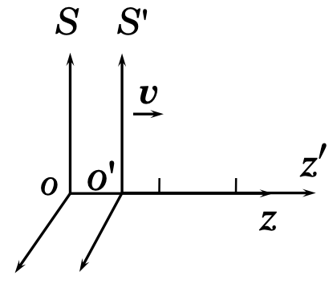
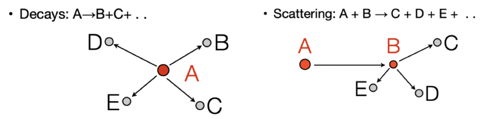
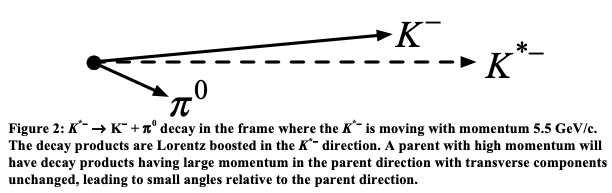

Relativistic Kinematics¶
Mechanics in Special Relativity¶
This section introduces the minimum set of relativistic kinematics needed for experimental nuclear and particle physics analysis. The emphasis is not on formal derivations for their own sake, but on quantities that will be used immediately in the next section: 4-momentum, invariant mass, boosts between reference frames, and practical vector classes in ROOT. In particular, this section should be read as preparation for the invariant-mass and missing-mass analyses in Section 7.2.
Lorentz Transformation¶
In special relativity, the space-time coordinates of an event depend on the inertial frame in which they are measured. Consider two inertial frames: $S$, and $S'$, where $S'$ moves with velocity $v$ along the $+z$-axis relative to $S$. The Lorentz transformation relates the coordinates $(ct,x,y,z)$ and $(ct',x',y',z')$ by
$$ \begin{align} x' &= x, & x &= x' \\ y' &= y, & y &= y' \\ z' &= \gamma (z - \beta ct), & z &= \gamma (z' + \beta ct) \\ ct' &= \gamma (ct - \beta z), & ct &= \gamma (ct' + \beta z) \end{align} $$ where
- $\beta = v/c$,
- $\gamma = 1/\sqrt{1-\beta^2}$.

A few points are especially important in physics analysis.
First, the space-time interval
$$ s^2=(ct)^2-x^2-y^2-z^2 $$
is invariant under Lorentz transformation. This invariance is the prototype for the invariant norm of the energy-momentum 4-vector discussed below.
Second, the transverse coordinates are unchanged by a boost along the $z$-axis:
$$ x'=x,\qquad y'=y. $$
Third, the Lorentz transformation leads to two standard relativistic effects:
- length contraction along the boost direction,
- time dilation for moving clocks.
If a particle has proper lifetime $\tau$ in its rest frame, then in a frame where it moves with Lorentz factor $\gamma$, its average observed lifetime is $\gamma \tau$. This is directly relevant in detector-based reconstruction of unstable particles.
Relativistic Energy and Momentum¶
For a particle with rest mass $m$ and velocity $v$,
$$ \vec{p}=\gamma m \vec{v}, \qquad E=\gamma mc^2. $$
The total energy contains both rest energy and kinetic energy:
$$ E = T + mc^2, \qquad T = (\gamma-1)mc^2. $$
The energy and momentum transform under Lorentz boosts in the same way as the time and longitudinal spatial coordinates. For a boost along $z$,
$$ \begin{align} p'_x &= p_x, & p_x &= p'_x \\ p'_y &= p_y, & p_y &= p'_y \\ p'_z &= \gamma (p_z-\beta E/c), & p_z &= \gamma (p'_z+\beta E'/c) \\ E'/c &= \gamma(E/c-\beta p_z), & E/c &= \gamma(E'/c+\beta p'_z) \end{align} $$ The most important invariant relation is
$$ E^2 = (pc)^2 + (mc^2)^2. $$
This equation is central in all later analyses. It is often used in three equivalent ways:
$$ m^2c^4 = E^2 - p^2c^2, $$
$$ p = \gamma \beta mc, $$
and, if the kinetic energy $T$ is known instead of the total energy,
$$ (pc)^2 = T^2 + 2mc^2T. $$
The last form is especially useful in nuclear physics, where detector calibration often yields kinetic energy more directly than total energy.
For a massless particle such as a photon, $m=0$, so
$$ E = pc. $$
For highly relativistic particles with $E \gg mc^2$, the approximation $E \approx pc$ becomes accurate.
Natural Units¶
In nuclear and particle physics, it is standard to use natural units with $c=1$. In this convention, energy, mass, and momentum are all expressed in units such as MeV or GeV, and many formulas simplify:
$$ E^2 = p^2 + m^2, \qquad m^2 = E^2 - p^2, \qquad T = E-m, \qquad p^2 = T^2 + 2mT. $$
This convention will be used throughout the remainder of the chapter unless otherwise noted.
Published experimental papers still often write masses in GeV/$c^2$ and momenta in GeV/$c$ to make dimensions explicit. In analysis code, however, one usually works in natural units and omits the factors of $c$, as long as units are handled consistently.
Example¶
Consider a $K_S$ meson with rest mass $m_{K_S}=0.4977$ GeV moving along the $+z$-axis with $v=0.95c$. Then
$$ \gamma = \frac{1}{\sqrt{1-0.95^2}} = 3.2026, $$
$$ E = \gamma m_{K_S} = 3.2026 \times 0.4977 = 1.5939\ \text{GeV}, $$
$$ p_z = \gamma \beta m_{K_S} = 3.2026 \times 0.95 \times 0.4977 = 1.5142\ \text{GeV}. $$
Since $p_x=p_y=0$,
$$ m = \sqrt{E^2-p^2} = \sqrt{(1.5939)^2-(1.5142)^2} = 0.4977\ \text{GeV}, $$
which reproduces the rest mass.
This is a simple but important check: in practical analysis, whenever a 4-vector is constructed, one should be able to recover the particle mass from $E^2-p^2$, up to numerical precision and detector resolution.
Vectors and Lorentz Transformations¶
The 4-vector formalism provides the natural language for relativistic analysis. It unifies energy and momentum into one object and makes invariant quantities explicit.
Definition of 4-Vectors¶
A 4-vector combines one time-like component with three spatial components. Two examples are used repeatedly in relativistic mechanics:
space-time 4-vector: $$ X^\mu = (ct, x, y, z), $$
energy-momentum 4-vector: $$ P^\mu = (E/c, p_x, p_y, p_z). $$
In natural units, the energy-momentum 4-vector is usually written as
$$ P^\mu = (E,\vec{p}) = (E,p_x,p_y,p_z). $$
For a general 4-vector $A^\mu=(A_0,\vec{A})$, the Minkowski inner product is
$$ A\cdot B = A_0B_0 - \vec{A}\cdot\vec{B}, $$
and the invariant norm is
$$ A^2 = A\cdot A = A_0^2 - |\vec{A}|^2. $$
For the energy-momentum 4-vector,
$$ P^2 = E^2 - p^2 = m^2 $$
in natural units. This is the origin of invariant mass.
Lorentz Transformation of 4-Vectors¶
A Lorentz transformation maps one 4-vector to another in a different inertial frame while preserving the Minkowski norm. This is why the quantity $P^2=m^2$ is frame-independent.
In the particle rest frame,
$$ P^\mu = (m,0,0,0), $$
so
$$ P^2 = m^2. $$
In any boosted frame, the components $E$ and $\vec{p}$ change, but the invariant mass does not.
This fact is fundamental in data analysis. Peak structures in invariant-mass spectra are meaningful precisely because invariant mass is independent of the reference frame used to describe the event.
Multi-Particle Systems¶
For a system of particles, the total 4-momentum is
$$ P^\mu_{\text{tot}} = \sum_i P^\mu_i. $$
Its invariant norm defines the invariant mass of the system:
$$ M_{\text{sys}}^2 = P_{\text{tot}}^2 = \left(\sum_i E_i\right)^2 - \left|\sum_i \vec{p}_i\right|^2. $$
This formula is one of the most important working equations in experimental particle and nuclear physics. It is used to reconstruct short-lived resonances and composite systems from detected final-state particles.
Conservation in Reactions¶
For decays and scattering reactions, 4-momentum conservation is written compactly as
$$ P^\mu_{\text{initial}} = P^\mu_{\text{final}}. $$
For example:
decay: $$ P \to P_1 + P_2 + \cdots $$
scattering: $$ P_1 + P_2 \to P_3 + P_4 + \cdots $$
Because each $P^\mu$ contains both energy and momentum, one equation automatically enforces both energy conservation and momentum conservation.
This compact notation will be used heavily in Section 7.2, especially when defining invariant mass and missing mass.

Physics Vectors¶
In physics analysis, vectors are used to describe positions, directions, momenta, and relativistic 4-momenta. ROOT provides both legacy classes and modern vector classes for these tasks. Since many existing analysis examples still use TVector3 and TLorentzVector, it is useful to know them. At the same time, modern ROOT recommends the GenVector classes for new code. ROOT’s current documentation explicitly lists TLorentzVector among the legacy physics classes and recommends the newer ROOT::Math vector classes instead. (GitHub)
Vector Classes and Representations¶
Vectors may be represented in different coordinate systems depending on the problem. In collider physics, $(p_T,\eta,\phi,m)$ is often convenient. In many nuclear and fixed-target analyses, Cartesian momentum components $(p_x,p_y,p_z,E)$ remain the most direct and transparent representation. ROOT’s modern Lorentz-vector classes support both styles through different coordinate specializations. (ROOT)
For this chapter, Cartesian 4-vectors are the most natural choice because they connect directly to energy-momentum conservation, two-body kinematics, and the invariant-mass constructions used in the next section.
Tutorial: TVector3, TLorentzVector, and Modern Alternatives¶
This tutorial keeps TVector3 and TLorentzVector because they are still widely encountered in ROOT macros, older analyses, and examples involving TGenPhaseSpace. However, for new analysis code it is advisable to be aware of the modern ROOT::Math::LorentzVector family, such as ROOT::Math::PxPyPzEVector and ROOT::Math::PxPyPzMVector, which ROOT documents as the preferred alternatives to the legacy class. (GitHub)
A practical rule for this chapter is:
- use
TLorentzVectorwhen reading older code, older tutorials, orTGenPhaseSpace-based examples; - prefer
ROOT::Math::LorentzVectorspecializations when writing new code intended to be maintained and extended.
This is not merely a style preference. It improves consistency with current ROOT practice while preserving compatibility with the large amount of legacy code still used in the field. (GitHub)
3D Vectors: TVector3¶
TVector3 is a legacy ROOT class for 3D vectors, usually used for positions, directions, and momentum components. It is still convenient in many simple examples.
Representations¶
A TVector3 can be viewed in several equivalent ways:
- Cartesian components: $(x,y,z)$,
- momentum-like components: $(p_x,p_y,p_z)$,
- spherical quantities through magnitude, polar angle, and azimuthal angle.
Properties¶
For a vector $\vec{v}=(x,y,z)$,
$$ |\vec{v}|=\sqrt{x^2+y^2+z^2}. $$
Its direction can be characterized by
Theta(): polar angle,Phi(): azimuthal angle.
These quantities are frequently used when detector information is given in terms of angles rather than Cartesian components.
Member Functions¶
Common methods include
SetX(x),SetY(y),SetZ(z),SetXYZ(x,y,z),SetMag(mag),SetMagThetaPhi(mag,theta,phi),SetPhi(phi),SetTheta(theta),Unit(),Transform(const TRotation&).
Transformations¶
Typical operations include
RotateX(angle),RotateY(angle),RotateZ(angle),Rotate(angle,axis).
These are useful for changing coordinate conventions or defining axes relative to beam direction or detector geometry.
4D Lorentz Vectors: TLorentzVector¶
TLorentzVector represents a relativistic 4-vector, usually written as $(p_x,p_y,p_z,E)$ in natural units. It is simple and historically important, but it should now be regarded as a legacy interface rather than the only or default choice for new work. ROOT states this explicitly in the class documentation and source notes. (ROOT)
Representations¶
The standard Cartesian representation is
$$ (p_x,p_y,p_z,E), $$
corresponding to the 4-momentum $P^\mu=(E,\vec{p})$.
In practical analysis, this representation is especially transparent for:
- invariant-mass reconstruction,
- missing-mass reconstruction,
- explicit energy-momentum conservation checks,
- boosts between laboratory and center-of-mass frames.
Properties¶
Useful methods include
Px(),Py(),Pz(),E(),P()for momentum magnitude,Pt()for transverse momentum,Theta(),Phi(),Eta()for pseudorapidity,Vect()to obtain the spatialTVector3,M()for invariant mass,Beta()andGamma()for relativistic kinematics.
Member Functions¶
Common setters and constructors include
SetPx(px),SetPy(py),SetPz(pz),SetE(e),SetPxPyPzE(px,py,pz,e),SetXYZM(px,py,pz,m).
The SetXYZM form is often useful in analysis because one frequently knows the 3-momentum and assumes a mass hypothesis for a particle species. The energy is then constructed internally from
$$ E=\sqrt{p^2+m^2}. $$
This is a good place to be careful: if a detector directly measures kinetic energy $T$, then one must first compute
$$ E=T+m, \qquad p=\sqrt{T^2+2mT}, $$
before constructing the full 4-vector.
A Note on Modern Lorentz-Vector Classes¶
For new analysis code, it is worth being aware of
ROOT::Math::PxPyPzEVector
ROOT::Math::PxPyPzMVector
ROOT::Math::PtEtaPhiMVector
and related classes in Math/Vector4D.h. They provide the same physical content with a more modern interface and are the direction recommended by ROOT’s vector documentation. For the present section, however, we continue to show TLorentzVector in several examples because it remains common in existing HEP and nuclear-physics code, and because it interfaces naturally with TGenPhaseSpace, which is introduced later in this chapter. (ROOT)
Example: 4-vector for a $K_S$ Meson¶
A $K_S$ meson with momentum along $z$ can be represented as
#include <iostream>
#include "TLorentzVector.h"
TLorentzVector ks(0.0, 0.0, 1.5142202, 1.5939162);
std::cout << "K_S meson 4-vector:\n";
std::cout << Form(" Px = %.3f GeV, Py = %.3f GeV, Pz = %.3f GeV\n",
ks.Px(), ks.Py(), ks.Pz());
std::cout << Form(" P = %.3f GeV\n", ks.P());
std::cout << Form(" E = %.3f GeV\n", ks.E());
std::cout << Form(" M = %.3f GeV\n", ks.M());
std::cout << Form(" Gamma = %.3f\n", ks.Gamma());
K_S meson 4-vector: Px = 0.000 GeV, Py = 0.000 GeV, Pz = 1.514 GeV P = 1.514 GeV E = 1.594 GeV M = 0.498 GeV Gamma = 3.203
Decay of a Particle to Two Daughters¶
Two-body decays are among the most important kinematic building blocks in experimental analysis. They appear directly in many resonance decays, and they also provide the simplest nontrivial example of how conservation laws determine final-state kinematics.
Consider a parent particle of mass $M$ decaying into two daughters of masses $m_1$ and $m_2$ in the parent rest frame. The conservation law is
$$ P = P_1 + P_2, $$
with
$$ P=(M,0,0,0),\qquad P_1=(E_1,\vec{p}_1),\qquad P_2=(E_2,\vec{p}_2). $$
The daughter particles satisfy
$$ P_1^2 = m_1^2,\qquad P_2^2 = m_2^2. $$
Energy and Momentum Calculation Using Analytical Equations¶
Starting from
$$ P_2 = P - P_1, $$
we obtain
$$ P_2^2 = (P-P_1)^2 = P^2 - 2P\cdot P_1 + P_1^2. $$
Therefore,
$$ m_2^2 = M^2 - 2P\cdot P_1 + m_1^2. $$
In the parent rest frame, $P=(M,0)$, so $P\cdot P_1=ME_1$. Hence
$$ m_2^2 = M^2 - 2ME_1 + m_1^2, $$
which gives
$$ E_1 = \frac{M^2+m_1^2-m_2^2}{2M}. $$
Similarly,
$$ E_2 = \frac{M^2+m_2^2-m_1^2}{2M}. $$
The common momentum magnitude is
$$ |\vec{p}_1| = |\vec{p}_2| = \frac{\sqrt{(M^2-(m_1+m_2)^2)(M^2-(m_1-m_2)^2)}}{2M}. $$
This expression is often preferable in practice because it is symmetric in $m_1$ and $m_2$ and makes the threshold condition transparent:
$$ M \ge m_1 + m_2. $$
Example: $K^{*-}\to K^-+\pi^0$¶
Consider the decay
$$ K^{*-}\to K^-+\pi^0 $$
with
$$ m_{K^{*-}}=0.8917\ \text{GeV},\qquad m_{K^-}=0.4937\ \text{GeV},\qquad m_{\pi^0}=0.1350\ \text{GeV}. $$
Then
$$ E_{K^-}=\frac{m_{K^{*-}}^2+m_{K^-}^2-m_{\pi^0}^2}{2m_{K^{*-}}} =0.5723\ \text{GeV}, $$
$$ E_{\pi^0}=m_{K^{*-}}-E_{K^-}=0.3194\ \text{GeV}, $$
and
$$ p=\sqrt{E_{K^-}^2-m_{K^-}^2}=0.2895\ \text{GeV}. $$
The two daughter particles therefore emerge back-to-back in the parent rest frame with equal momentum magnitude.
This example is useful not only because the algebra is simple, but because it captures the pattern used in real analyses: specify a parent state, impose 4-momentum conservation, and construct daughter 4-vectors under mass hypotheses.
ROOT Code Example¶
The following ROOT code implements the analytical result in the parent rest frame:
#include <iostream>
#include <cmath>
#include "TLorentzVector.h"
const double m_Kstar = 0.8917;
const double m_K = 0.4937;
const double m_pi0 = 0.1350;
TLorentzVector P_Kstar(0.0, 0.0, 0.0, m_Kstar);
double E_K = (m_Kstar*m_Kstar + m_K*m_K - m_pi0*m_pi0) / (2.0*m_Kstar);
double p_K = std::sqrt(E_K*E_K - m_K*m_K);
TLorentzVector P_K(0.0, 0.0, p_K, E_K);
TLorentzVector P_pi0 = P_Kstar - P_K;
TLorentzVector P_total = P_K + P_pi0;
std::cout << "Parent K*- 4-vector:\n";
std::cout << Form(" Px = %.4f, Py = %.4f, Pz = %.4f, E = %.4f GeV\n",
P_Kstar.Px(), P_Kstar.Py(), P_Kstar.Pz(), P_Kstar.E());
std::cout << "\nDaughter K- 4-vector:\n";
std::cout << Form(" Px = %.4f, Py = %.4f, Pz = %.4f, E = %.4f GeV\n",
P_K.Px(), P_K.Py(), P_K.Pz(), P_K.E());
std::cout << Form(" M = %.4f GeV\n", P_K.M());
std::cout << "\nDaughter pi0 4-vector:\n";
std::cout << Form(" Px = %.4f, Py = %.4f, Pz = %.4f, E = %.4f GeV\n",
P_pi0.Px(), P_pi0.Py(), P_pi0.Pz(), P_pi0.E());
std::cout << Form(" M = %.4f GeV\n", P_pi0.M());
std::cout << "\nTotal 4-vector (K- + pi0):\n";
std::cout << Form(" Px = %.4f, Py = %.4f, Pz = %.4f, E = %.4f GeV\n",
P_total.Px(), P_total.Py(), P_total.Pz(), P_total.E());
std::cout << Form(" M = %.4f GeV\n", P_total.M());
Parent K*- 4-vector: Px = 0.0000, Py = 0.0000, Pz = 0.0000, E = 0.8917 GeV Daughter K- 4-vector: Px = 0.0000, Py = 0.0000, Pz = 0.2895, E = 0.5723 GeV M = 0.4937 GeV Daughter pi0 4-vector: Px = 0.0000, Py = 0.0000, Pz = -0.2895, E = 0.3194 GeV M = 0.1350 GeV Total 4-vector (K- + pi0): Px = 0.0000, Py = 0.0000, Pz = 0.0000, E = 0.8917 GeV M = 0.8917 GeV
Lorentz Boost¶
A Lorentz boost transforms a 4-vector from one inertial frame to another moving with relative velocity $\vec{v}$. In experimental practice, boosts are used constantly:
- from the laboratory frame to the parent-particle rest frame,
- from the laboratory frame to the center-of-mass frame,
- from a reconstructed system back to its own rest frame.
For most data-analysis work, the important point is not the full matrix form, but the physical meaning: energy and longitudinal momentum mix under boosts, while invariant mass remains unchanged.
General Boost Matrix¶
For a boost with $\vec{\beta}=\vec{v}/c$, $\beta=|\vec{\beta}|$, and $\gamma=1/\sqrt{1-\beta^2}$, the Lorentz transformation can be written in matrix form. The explicit matrix is useful for formal completeness, but in ROOT analysis one almost always uses the vector-class methods directly.
What matters most is that the transformed 4-vector $P'$ satisfies
$$ P'^2 = P^2. $$
Boosts Along Cartesian Axes¶
For boosts along one axis, the formulas are simpler. For example, along $z$,
$$ \begin{pmatrix} E'\\ p'_x\\ p'_y\\ p'_z \end{pmatrix} = \begin{pmatrix} \gamma & 0 & 0 & -\gamma\beta\\ 0 & 1 & 0 & 0\\ 0 & 0 & 1 & 0\\ -\gamma\beta & 0 & 0 & \gamma \end{pmatrix} \begin{pmatrix} E\\ p_x\\ p_y\\ p_z \end{pmatrix}. $$
This form is often sufficient to understand textbook examples, but ROOT frees us from doing such transformations by hand.
Lorentz Boost Tools in ROOT¶
In the legacy interface, the key tools are
TLorentzVector,TVector3,BoostVector(),Boost().
For a 4-vector $P$, BoostVector() returns the velocity vector $\vec{\beta}$ corresponding to that particle’s motion. Then Boost() applies the corresponding Lorentz transformation.
A common source of confusion is the sign convention. If b = p4.BoostVector(), then
- boosting another particle by
btakes it from the parent rest frame to the laboratory frame ifp4is the parent 4-vector in the lab; - boosting by
-btakes a laboratory-frame vector into the parent rest frame.
This sign choice matters greatly in practical analysis, especially when defining angular distributions in the rest frame of a resonance or composite system.
Example: $K^-$ Boost from $K^{*-}$ Decay¶
Suppose the parent $K^{*-}$ has 4-momentum kss in the laboratory frame, and one daughter $K^-$ has 4-momentum km in the $K^{*-}$ rest frame.
#include <iostream>
#include "TLorentzVector.h"
#include "TVector3.h"
const double m_Kstar = 0.8917;
double pz_Kstar = 5.5;
TLorentzVector kss;
kss.SetXYZM(0.0, 0.0, pz_Kstar, m_Kstar);
TLorentzVector km(0.0, 0.0, 0.2895, 0.5723);
TVector3 ks_boost = kss.BoostVector();
TLorentzVector km_boosted = km;
km_boosted.Boost(ks_boost);
std::cout << "K*- in lab frame:\n";
std::cout << Form(" Px = %.4f, Py = %.4f, Pz = %.4f, E = %.4f GeV\n",
kss.Px(), kss.Py(), kss.Pz(), kss.E());
std::cout << "\nK- in K*- rest frame:\n";
std::cout << Form(" Px = %.4f, Py = %.4f, Pz = %.4f, E = %.4f GeV\n",
km.Px(), km.Py(), km.Pz(), km.E());
std::cout << "\nBoost vector (bx, by, bz) = ("
<< Form("%.4f, %.4f, %.4f)\n",
ks_boost.X(), ks_boost.Y(), ks_boost.Z());
std::cout << "\nK- boosted to lab frame:\n";
std::cout << Form(" Px = %.4f, Py = %.4f, Pz = %.4f, E = %.4f GeV\n",
km_boosted.Px(), km_boosted.Py(), km_boosted.Pz(), km_boosted.E());
K*- in lab frame: Px = 0.0000, Py = 0.0000, Pz = 5.5000, E = 5.5718 GeV K- in K*- rest frame: Px = 0.0000, Py = 0.0000, Pz = 0.2895, E = 0.5723 GeV Boost vector (bx, by, bz) = (0.0000, 0.0000, 0.9871) K- boosted to lab frame: Px = 0.0000, Py = 0.0000, Pz = 5.3389, E = 5.3617 GeV
#include <iostream>
#include "Math/LorentzVector.h"
#include "Math/Vector4D.h"
// Define masses from K*⁻ → K⁻ + π⁰ decay (in GeV, c = 1)
const double m_Kstar = 0.8917; // K*⁻ mass
const double m_K = 0.4937; // K⁻ mass
// K*⁻ moving along z-axis with pz = 5.5 GeV in lab frame
ROOT::Math::PxPyPzMVector kss(0.0, 0.0, 5.5, m_Kstar);
std::cout << "K*⁻ in lab frame:\n";
std::cout << Form(" Px = %.4f, Py = %.4f, Pz = %.4f, E = %.4f GeV\n",
kss.Px(), kss.Py(), kss.Pz(), kss.E());
// K⁻ in K*⁻ rest frame (from decay: pz = 0.2895 GeV, E = 0.5723 GeV)
ROOT::Math::PxPyPzMVector km(0.0, 0.0, 0.2895, m_K);
std::cout << "\nK⁻ in K*⁻ rest frame:\n";
std::cout << Form(" Px = %.4f, Py = %.4f, Pz = %.4f, E = %.4f GeV\n",
km.Px(), km.Py(), km.Pz(), km.E());
// Get boost vector of K*⁻ in Lab frame;
ROOT::Math::XYZVector ks_boost = -kss.BoostToCM();
std::cout << "\nBoost vector (βx, βy, βz) = ("
<< Form("%.4f, %.4f, %.4f)\n", ks_boost.X(), ks_boost.Y(), ks_boost.Z());
// Apply boost to K⁻
ROOT::Math::Boost boost(ks_boost);
ROOT::Math::PxPyPzMVector km_boosted = boost * km;
std::cout << "\nK⁻ boosted to lab frame:\n";
std::cout << Form(" Px = %.4f, Py = %.4f, Pz = %.4f, E = %.4f GeV\n",
km_boosted.Px(), km_boosted.Py(), km_boosted.Pz(), km_boosted.E());
K*⁻ in lab frame: Px = 0.0000, Py = 0.0000, Pz = 5.5000, E = 5.5718 GeV K⁻ in K*⁻ rest frame: Px = 0.0000, Py = 0.0000, Pz = 0.2895, E = 0.5723 GeV Boost vector (βx, βy, βz) = (0.0000, 0.0000, 0.9871) K⁻ boosted to lab frame: Px = 0.0000, Py = 0.0000, Pz = 5.3390, E = 5.3618 GeV
#include <iostream>
#include "TLorentzVector.h"
#include "TVector3.h"
// Define masses from K*⁻ → K⁻ + π⁰ decay (in GeV, c = 1)
const double m_Kstar = 0.8917; // K*⁻ mass
const double m_K = 0.4937; // K⁻ mass
// K*⁻ moving along z-axis with pz = 5.5 GeV in lab frame
// Calculate energy: E = sqrt(p^2 + m^2)
double pz_Kstar = 5.5;
double E_Kstar = sqrt(pz_Kstar * pz_Kstar + m_Kstar * m_Kstar);
TLorentzVector kss(0.0, 0.0, pz_Kstar, E_Kstar);
//TLorentzVector kss;
//kss.SetXYZM(0.0, 0.0, pz_Kstar, m_Kstar);
std::cout << "K*⁻ in lab frame:\n";
std::cout << Form(" Px = %.4f, Py = %.4f, Pz = %.4f, E = %.4f GeV\n",
kss.Px(), kss.Py(), kss.Pz(), kss.E());
// K⁻ in K*⁻ rest frame (from decay: pz = 0.2895 GeV, E = 0.5723 GeV)
TLorentzVector km(0.0, 0.0, 0.2895, 0.5723);
std::cout << "\nK⁻ in K*⁻ rest frame:\n";
std::cout << Form(" Px = %.4f, Py = %.4f, Pz = %.4f, E = %.4f GeV\n",
km.Px(), km.Py(), km.Pz(), km.E());
// Get boost vector of K*⁻ in lab frame for boosting from K*⁻ rest frame to lab frame
TVector3 ks_boost = kss.BoostVector();
std::cout << "\nBoost vector (βx, βy, βz) = ("
<< Form("%.4f, %.4f, %.4f)\n", ks_boost.X(), ks_boost.Y(), ks_boost.Z());
// Apply boost to K⁻
TLorentzVector km_boosted = km; // Copy the original vector
km_boosted.Boost(ks_boost);
std::cout << "\nK⁻ boosted to lab frame:\n";
std::cout << Form(" Px = %.4f, Py = %.4f, Pz = %.4f, E = %.4f GeV\n",
km_boosted.Px(), km_boosted.Py(), km_boosted.Pz(), km_boosted.E());
K*⁻ in lab frame: Px = 0.0000, Py = 0.0000, Pz = 5.5000, E = 5.5718 GeV K⁻ in K*⁻ rest frame: Px = 0.0000, Py = 0.0000, Pz = 0.2895, E = 0.5723 GeV Boost vector (βx, βy, βz) = (0.0000, 0.0000, 0.9871) K⁻ boosted to lab frame: Px = 0.0000, Py = 0.0000, Pz = 5.3389, E = 5.3617 GeV
Phase Space¶
1. Particle Decays¶
Particle decays are stochastic processes constrained by relativistic kinematics and conservation laws. If an unstable particle has proper lifetime $\tau$, then in a frame where it moves with Lorentz factor $\gamma$, its decay-time distribution is
$$ P(t)=\frac{1}{\gamma\tau}\exp\left(-\frac{t}{\gamma\tau}\right). $$
The total decay width is the sum of all partial widths,
$$ \Gamma = \sum_i \Gamma_i. $$
For a decay into $n$ final-state particles, the differential decay rate can be written as
$$ d\Gamma = \frac{(2\pi)^4}{2M}|{\cal M}|^2\, d\Phi_n(P;p_1,\dots,p_n), $$
where $M$ is the mass of the parent particle, $|{\cal M}|^2$ contains the decay dynamics, and $d\Phi_n$ is the relativistic $n$-body phase-space element.
For the purposes of this course, the central point is that phase space defines the kinematically allowed region once the following conditions are imposed:
- every final-state particle is on shell;
- every final-state particle has positive energy;
- the total 4-momentum is conserved.
This is exactly the framework used in practical event generation, kinematic reconstruction, and analysis validation.
2. Phase Space Factor¶
The Lorentz-invariant $n$-body phase-space element is
$$ d\Phi_n(P;p_1,\dots,p_n) = \delta^{(4)}\!\left(P-\sum_{i=1}^{n} p_i\right) \prod_{i=1}^{n} \frac{d^3p_i}{(2\pi)^3\,2E_i}. $$
This expression is compact, but each factor has a clear physical meaning.
- The four-dimensional delta function $\delta^{(4)}$ enforces exact conservation of total energy and momentum.
- The factor $d^3p_i/(2E_i)$ is the Lorentz-invariant measure for each final-state particle.
- The product over all daughters describes the full allowed kinematic volume of the decay.
In simple cases, such as a two-body decay in the parent rest frame, the allowed kinematics can be written analytically. In more complicated cases, especially three-body and higher-multiplicity decays, one generally relies on numerical phase-space generators.
3. Two-Body Decay as the Simplest Phase-Space Example¶
For a two-body decay
$$ A \to 1 + 2, $$
the kinematics are especially simple in the rest frame of the parent. The two daughters must emerge back-to-back, and their momentum magnitude is fixed entirely by the masses:
$$ p^* = \frac{\sqrt{\left(M^2-(m_1+m_2)^2\right)\left(M^2-(m_1-m_2)^2\right)}}{2M}. $$
Their energies in the parent rest frame are
$$ E_1^* = \frac{M^2+m_1^2-m_2^2}{2M}, \qquad E_2^* = \frac{M^2+m_2^2-m_1^2}{2M}. $$
The superscript $^*$ is commonly used to denote quantities evaluated in the parent rest frame or, more generally, the center-of-mass frame.
This is the simplest nontrivial example of phase space:
- the masses determine the daughter momentum magnitude;
- only the decay direction remains free;
- the angular distribution is isotropic if the decay dynamics do not introduce spin correlations or anisotropy.
For teaching and for analysis checks, two-body decays are extremely useful because the rest-frame structure is so clear.
4. Multi-Body Decays and Why Phase Space Matters¶
For three-body and higher-multiplicity decays, the masses no longer determine the final state uniquely. Even after imposing energy-momentum conservation, a continuous kinematic region remains. That region is the physically allowed phase space.
This matters in real analysis because phase space is not merely a formal concept. It is used to study
- the expected shape of kinematic distributions;
- detector acceptance effects;
- reconstruction bias;
- background modeling;
- angular and invariant-mass correlations.
In both nuclear and particle physics, one often moves among several reference frames:
- the laboratory frame, where the detector measures the event;
- the parent rest frame, where the decay geometry is often simplest;
- the overall center-of-mass frame, especially in scattering and production reactions;
- sometimes a helicity frame or beam-defined frame, when angular observables are studied.
A good phase-space example should therefore do more than generate one event. It should show how distributions behave in different frames and how invariant quantities remain unchanged under Lorentz transformations.
Using TGenPhaseSpace in ROOT¶
TGenPhaseSpace is a ROOT class for generating kinematically allowed decay final states. In practice, one uses it in three steps:
- define the parent 4-vector and the daughter masses;
- call
SetDecay(...)to initialize the decay; - call
Generate()to produce one event, then read the daughter 4-vectors withGetDecay(i).
ROOT documents this usage directly: SetDecay(...) checks whether the decay is kinematically allowed, Generate() creates one event and returns its un-normalized weight, and GetDecay(i) returns the TLorentzVector of the $i$-th daughter. (root.cern.ch)
For learning purposes, the cleanest route is:
- first, generategle two-body decay at rest** and inspect the daughter 4-vectors;
- then, let the parent move in the laboratory frame and study how the daughter angles in the parent rest frame map into the lab frame.
That way, the role of TGenPhaseSpace stays clear: first it generates correct decay kinematics, then Lorentz boosts are used to understand how those kinematics appear in different frames.
A Minimal Two-Body Example¶
Consider the decay
$$ K^{*-} \to K^- + \pi^0. $$
Start with the parent $K^{*-}$ at rest. Then the rest frame of the parent is also the center-of-mass frame of the decay, so the kinematics are as simple as possible:
- the two daughters must be back-to-back;
- their momentum magnitudes must be equal;
- the sum of the daughter 4-vectors must reproduce the parent 4-vector.
#include <iostream>
#include <cmath>
#include "TLorentzVector.h"
#include "TGenPhaseSpace.h"
void KstarDecaySimple()
{
const double m_Kstar = 0.8917; // GeV
const double m_K = 0.4937; // GeV
const double m_pi0 = 0.1350; // GeV
Double_t masses[2] = {m_K, m_pi0};
// Parent K*− at rest
TLorentzVector P_Kstar(0.0, 0.0, 0.0, m_Kstar);
// Analytical daughter momentum in the K* rest frame
const double pstar =
std::sqrt((m_Kstar*m_Kstar - std::pow(m_K + m_pi0, 2)) *
(m_Kstar*m_Kstar - std::pow(m_K - m_pi0, 2))) /
(2.0 * m_Kstar);
TGenPhaseSpace decay;
if (!decay.SetDecay(P_Kstar, 2, masses)) {
std::cerr << "Decay is kinematically forbidden." << std::endl;
return;
}
double weight = decay.Generate();
if (weight <= 0.0) {
std::cerr << "Decay generation failed." << std::endl;
return;
}
TLorentzVector K = *decay.GetDecay(0);
TLorentzVector Pi0 = *decay.GetDecay(1);
TLorentzVector Sum = K + Pi0;
std::cout << "Parent K*− 4-vector\n";
std::cout << " Px = " << P_Kstar.Px()
<< ", Py = " << P_Kstar.Py()
<< ", Pz = " << P_Kstar.Pz()
<< ", E = " << P_Kstar.E() << " GeV\n\n";
std::cout << "Generated K− 4-vector\n";
std::cout << " Px = " << K.Px()
<< ", Py = " << K.Py()
<< ", Pz = " << K.Pz()
<< ", E = " << K.E()
<< ", M = " << K.M() << " GeV\n\n";
std::cout << "Generated pi0 4-vector\n";
std::cout << " Px = " << Pi0.Px()
<< ", Py = " << Pi0.Py()
<< ", Pz = " << Pi0.Pz()
<< ", E = " << Pi0.E()
<< ", M = " << Pi0.M() << " GeV\n\n";
std::cout << "Reconstructed total 4-vector\n";
std::cout << " Px = " << Sum.Px()
<< ", Py = " << Sum.Py()
<< ", Pz = " << Sum.Pz()
<< ", E = " << Sum.E()
<< ", M = " << Sum.M() << " GeV\n\n";
std::cout << "Expected two-body momentum in the K* rest frame: "
<< pstar << " GeV\n";
std::cout << "Generated |p(K−)| = " << K.P()
<< " GeV, |p(pi0)| = " << Pi0.P() << " GeV\n";
std::cout << "Event weight = " << weight << std::endl;
}
KstarDecaySimple();
Parent K*− 4-vector Px = 0, Py = 0, Pz = 0, E = 0.8917 GeV Generated K− 4-vector Px = -0.00484, Py = 0.289316, Pz = -0.00794402, E = 0.572302, M = 0.4937 GeV Generated pi0 4-vector Px = 0.00484, Py = -0.289316, Pz = 0.00794402, E = 0.319398, M = 0.135 GeV Reconstructed total 4-vector Px = 0, Py = 0, Pz = 0, E = 0.8917, M = 0.8917 GeV Expected two-body momentum in the K* rest frame: 0.289465 GeV Generated |p(K−)| = 0.289465 GeV, |p(pi0)| = 0.289465 GeV Event weight = 1
What this example demonstrates¶
This example should be read as a direct check of the decay kinematics.
After SetDecay(...) succeeds, Generate() produces one allowed decay configuration. The daughter 4-vectors returned by GetDecay(0) and GetDecay(1) should satisfy
$$ P_{K^-} + P_{\pi^0} = P_{K^{*-}}. $$
Since the parent is at rest, the daughter 3-momenta should point in opposite directions, and their momentum magnitudes should match the analytical two-body result
$$ p^* = \frac{\sqrt{(M^2-(m_1+m_2)^2)(M^2-(m_1-m_2)^2)}}{2M}. $$
Example: Angular Correlation of Daughters¶
Once the basic usage is clear, the next step is to let the parent move in the laboratory frame and examine how the daughter angles are related between the parent rest frame and the lab frame.
We again use
$$ K^{*-} \to K^- + \pi^0, $$

but now the parent $K^{*-}$ is assigned a forward momentum along the $z$-axis. The decay is still generated with exactly the same TGenPhaseSpace machinery, but now the result is more interesting:
- in the parent rest frame, the decay is isotropic;
- in the lab frame, the boost compresses the daughter angles toward the forward direction;
- the relation between rest-frame angle and lab-frame angle becomes visible in two-dimensional plots.
This is the right place to introduce coordinate-system transformation, because the kinematics are still simple enough to interpret event by event.
Physical idea¶
In the $K^{*-}$ rest frame, the daughters are emitted back-to-back with fixed momentum magnitude. The only nontrivial variable is the decay direction.
After boosting to the laboratory frame:
- the longitudinal momentum component is changed by the Lorentz boost;
- the transverse momentum is unchanged;
- therefore the lab-frame polar angles are no longer the same as the rest-frame polar angles.
If the parent is highly boosted, even a wide range of rest-frame angles can map into relatively small lab-frame angles.
Code¶
The following code produces only four plots:
- $ \theta_{\mathrm{CM}}(K^-) $ vs. $ \theta_{\mathrm{Lab}}(K^-) $,
- $ \theta_{\mathrm{CM}}(K^-) $ vs. $ -\theta_{\mathrm{Lab}}(\pi^0) $,
- $ -\theta_{\mathrm{Lab}}(\pi^0) $ vs. $ \theta_{\mathrm{Lab}}(K^-) $,
- $ \theta_{\mathrm{Lab}}(K^-) $ vs. $ E_{\mathrm{kin}}(K^-) $.
#include <iostream>
#include <cmath>
#include "TMath.h"
#include "TCanvas.h"
#include "TH2F.h"
#include "TLorentzVector.h"
#include "TVector3.h"
#include "TGenPhaseSpace.h"
#include "TStyle.h"
void AngularCorrelationKStar()
{
gStyle->SetOptStat(0);
const double p_Kstar = 5.5; // GeV/c
const double m_Kstar = 0.8917; // GeV
const double m_K = 0.4937; // GeV
const double m_pi0 = 0.1350; // GeV
const int nEvents = 100000;
const double e_Kstar = std::sqrt(p_Kstar*p_Kstar + m_Kstar*m_Kstar);
const double deg = 180.0 / TMath::Pi();
TLorentzVector Kstar(0.0, 0.0, p_Kstar, e_Kstar);
Double_t masses[2] = {m_K, m_pi0};
TGenPhaseSpace decay_event;
if (!decay_event.SetDecay(Kstar, 2, masses)) {
std::cerr << "The process is kinematically forbidden." << std::endl;
return;
}
TH2F* hist_cm_lab = new TH2F(
"hist_cm_lab",
"K^{-}: #theta_{CM} vs #theta_{Lab};#theta_{CM}(K^{-}) [deg];#theta_{Lab}(K^{-}) [deg]",
180, 0, 180,
200, 0, 20
);
TH2F* hist_cm_pi_lab = new TH2F(
"hist_cm_pi_lab",
"K^{-}: #theta_{CM} vs -#theta_{Lab}(#pi^{0});#theta_{CM}(K^{-}) [deg];-#theta_{Lab}(#pi^{0}) [deg]",
180, 0, 180,
200, -20, 0
);
TH2F* hist_lab_km_pi = new TH2F(
"hist_lab_km_pi",
"-#theta_{Lab}(#pi^{0}) vs #theta_{Lab}(K^{-});-#theta_{Lab}(#pi^{0}) [deg];#theta_{Lab}(K^{-}) [deg]",
200, -20, 0,
200, 0, 10
);
TH2F* hist_lab_theta_energy = new TH2F(
"hist_lab_theta_energy",
"#theta_{Lab}(K^{-}) vs E_{kin}(K^{-});#theta_{Lab}(K^{-}) [deg];E_{kin}(K^{-}) [GeV]",
200, 0, 10,
200, 0, 5.5
);
// Boost from LAB to the parent rest frame
TVector3 boost_to_cm = -Kstar.BoostVector();
for (int i = 0; i < nEvents; ++i) {
double weight = decay_event.Generate();
if (weight <= 0.0) continue;
// Daughters in the LAB frame
TLorentzVector Km_lab = *decay_event.GetDecay(0);
TLorentzVector Pi0_lab = *decay_event.GetDecay(1);
// LAB observables
double theta_km_lab = Km_lab.Theta() * deg;
double theta_pi0_lab = Pi0_lab.Theta() * deg;
double e_kin_km_lab = Km_lab.E() - m_K;
// K− in the parent rest frame
TLorentzVector Km_cm = Km_lab;
Km_cm.Boost(boost_to_cm);
double theta_km_cm = Km_cm.Theta() * deg;
hist_cm_lab->Fill(theta_km_cm, theta_km_lab, weight);
hist_cm_pi_lab->Fill(theta_km_cm, -theta_pi0_lab, weight);
hist_lab_km_pi->Fill(-theta_pi0_lab, theta_km_lab, weight);
hist_lab_theta_energy->Fill(theta_km_lab, e_kin_km_lab, weight);
}
TCanvas* c_ang = new TCanvas("c_ang", "Angular Correlations", 800, 600);
c_ang->Divide(2, 2);
c_ang->cd(1);
hist_cm_lab->Draw("COLZ");
c_ang->cd(2);
hist_cm_pi_lab->Draw("COLZ");
c_ang->cd(3);
hist_lab_km_pi->Draw("COLZ");
c_ang->cd(4);
hist_lab_theta_energy->Draw("COLZ");
c_ang->Update();
}
AngularCorrelationKStar();
How to read the four plots¶
1. $ \theta_{\mathrm{CM}}(K^-) $ vs. $ \theta_{\mathrm{Lab}}(K^-) $¶
This plot shows how the polar angle of the $K^-$ in the parent rest frame is transformed into the lab frame.
The basic feature is that lab angles are compressed toward the forward direction. A broad range of rest-frame angles can appear as relatively small lab angles when the parent is moving fast.
2. $ \theta_{\mathrm{CM}}(K^-) $ vs. $ -\theta_{\mathrm{Lab}}(\pi^0) $¶
In a two-body decay, the two daughters are back-to-back in the parent rest frame. If the $K^-$ is emitted forward in the rest frame, the $\pi^0$ is emitted backward, and vice versa.
That complementary relation remains visible after boosting, although the mapping into lab angles is no longer symmetric.
The minus sign is used only to place the $\pi^0$ angle on the opposite side of the axis, so the correlation is easier to read visually.
3. $ -\theta_{\mathrm{Lab}}(\pi^0) $ vs. $ \theta_{\mathrm{Lab}}(K^-) $¶
This plot compares the two daughter angles directly in the laboratory frame.
It makes the two-body correlation especially clear: when one daughter is emitted at a small forward angle, the other tends to occupy the opposite side of the allowed lab-angle pattern.
4. $ \theta_{\mathrm{Lab}}(K^-) $ vs. $ E_{\mathrm{kin}}(K^-) $¶
This plot links the lab emission angle of the $K^-$ to its kinetic energy.
The qualitative trend is straightforward: smaller lab angles correspond to a larger forward momentum component, and therefore typically to a higher kinetic energy in the lab frame.
This plot is useful because it shows that the Lorentz boost affects not only angles but also the observable energy distribution.
Why the rest-frame boost is done this way¶
In the second example, the daughters are generated in the lab frame because the parent $K^{*-}$ was defined in the lab frame.
To recover the parent rest frame, the daughter 4-vector must be boosted by
$$ -\vec{\beta}_{K^{*-}}, $$
where $\vec{\beta}_{K^{*-}}$ is the velocity of the parent.
In code, that is exactly:
TVector3 boost_to_cm = -Kstar.BoostVector();
Km_cm.Boost(boost_to_cm);
Appendix: Notices for TGenPhaseSpace¶
The following practical points should be kept in mind when using TGenPhaseSpace for phase-space generation.
1. Check the decay before generating events¶
Before calling Generate(), always make sure the decay is kinematically allowed. In practice, this means comparing the parent mass-energy with the sum of the daughter masses, and checking the return value of SetDecay(...). ROOT documents SetDecay(...) as the step that tests whether the decay is permitted by kinematics. (root.cern.ch)
TGenPhaseSpace phaseSpaceGen;
if (!phase.SetDecay(parent, numDaughters, daughterMasses)) {
std::cerr << "Decay is kinematically forbidden." << std::endl;
return;
}
2. Understand what Generate() returns¶
After SetDecay(...) succeeds, each call to Generate() produces one kinematically allowed event and returns the event weight. The daughter 4-momenta are then accessed through GetDecay(i). ROOT documents this behavior explicitly. (ROOT)
double weight = phaseSpaceGen.Generate();
TLorentzVector* daughterMomentum = phaseSpaceGen.GetDecay(i);
For the simple examples in this section, this is usually all that is needed: generate an event, read the daughter 4-vectors, and fill the relevant observables.
3. Weighted events vs. unweighted events¶
By default, TGenPhaseSpace gives weighted events. For many teaching examples and kinematic studies, the simplest approach is to keep those weights and use them when filling histograms:
hist->Fill(x, weight);
If instead an unweighted event sample is required, then a rejection-sampling step should be added.
4. Determine a working $W_{\max}$ empirically when needed¶
ROOT provides GetWtMax(), but in practice some users have reported that it can be overly conservative for rejection sampling. For that reason, when an efficient unweighted sample is needed, it is safer to determine a working maximum weight empirically from a large number of generated trials. ROOT’s documentation lists GetWtMax(), and ROOT user discussions report cases where its value is not tight enough for practical generation. (ROOT)
TGenPhaseSpace phaseSpaceGen;
phaseSpaceGen.SetDecay(parent, numDaughters, daughterMasses);
double Wmax = 0.0;
const int Nsamples = 1000000;
for (int i = 0; i < Nsamples; ++i) {
double weight = phaseSpaceGen.Generate();
if (weight > Wmax) Wmax = weight;
}
5. Use rejection sampling for unweighted events¶
Once a suitable (W_{\max}) has been obtained, unweighted events can be generated with the Von Neumann rejection method:
double weight = 0.0;
double random = 1.0;
while (random > weight) {
weight = phaseSpaceGen.Generate() / Wmax;
random = gRandom->Rndm();
}
TLorentzVector* daughterMomentum = phaseSpaceGen.GetDecay(i);
In this way, accepted events have equal statistical weight and can be used as an unweighted phase-space sample.
References:¶
[1]. [Paul Avery PHZ4390 Aug. 26, 2015]